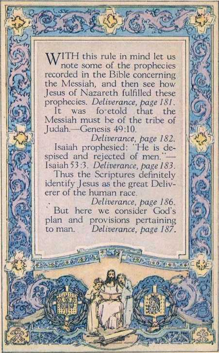

ment. Deliverance, page 181
qpHE identification of the 1 Messiah has long been in doubt in the minds of millions of people, both Jews and Gentiles. Deliverance, page 179.
Prophecy means foretelling, long in advance, events that will transpire in the future.
Deliverance, page 180.
But how may we know
when we have the proper understanding of a prophecy?
Prophecy can be understood only after its fulfilment, or while in the course of fulfil-

means
1 know the Word of God and to rely upon it. Deliverance, page 195.
The justification by jehovah therefore constitutes a call or invitation to membership in the kingdom or empire.
Deliverance, page 197.
Why do true Christians suffer? Because they refuse to show allegiance unto the Devil’s organization.
Deliverance, page 226.
Babylon means confusion, and is a term applied to ecclesiasti-cism because of its numerous systems and conflicting doctrines.
Deliverance, page 232.

Next Reading Assignment Pages 179 to 200 I Following Week % Pages 2oi to 234 U
'T'HE typical kingdom of God, 1 namely, the nation of Israel, was overturned in the year 606 B. C. That date marks the be
ginning of the Gentile Times.
Deliverance, page 233.
When the true followers of Christ J esus began to search the Scriptures, they soon reached the conclusion that the 2520-year period of the Gentiles of necessity ends in 1914. Therefore they looked forward with expectancy to that year. The Lord has rewarded them for watching for the fulfilment of his prophetic utterances. Deliverance, page 233.